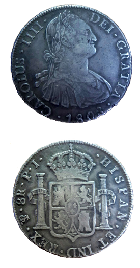

Numismáticos y coleccionistas
Los numismáticos son a veces diferenciados de los coleccionistas en tanto que los últimos básicamente derivan su placer de la simple posesión de objetos monetarios, mientras que la atención de los primeros se centra en la adquisición de conocimientos sobre ellos. De hecho, muchos numismáticos son también coleccionistas y algunos coleccionistas muestran interés por el conocimiento de sus objetos de colección.